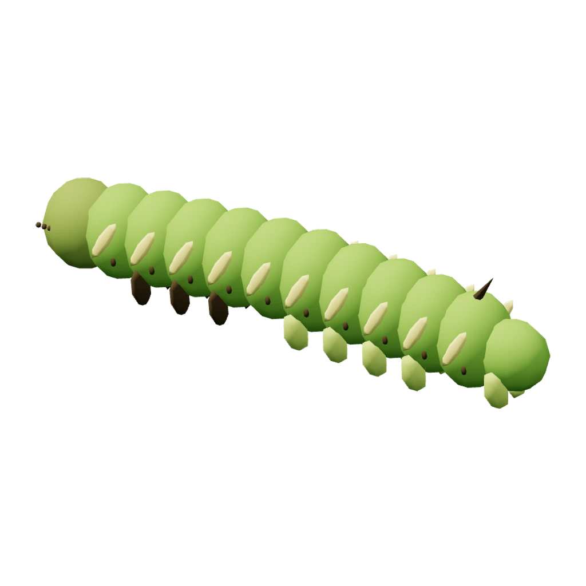

Hoofdmenu
Verkennen
In de buurt
Bosmier · CP 756
Vangnet: houd vast, veeg en raak de krimpende ring.
Bugdex 21 soorten
Rups → Nachtvlinder is de bestaande spel-lijn; later pas extra, biologisch passende lijnen.
Mijn bugs
Rups

Metamorfose
Rups → Nachtvlinder
Bestaande evolutie. De huidige Rups gebruikt nog een keverlarve-model; artcorrectie vereist.
Veldtas
Korte uitleg van de beloning. Geen onbeperkte standaardnetten.
Onderzoek
Vang 3 bugs
Beloning: 3 bosnetten + 1 lokbloem + TM
Volgende opdrachten
Meer onderzoek pas zichtbaar maken nadat inhoud en serverclaims zijn geïmplementeerd.
Mijn buddy
Bosmier
0,6 / 1 km
Verdien soortnectar door te wandelen.
Trainer
BugBaas Trainer
Trainer XP en level: gepland, nog niet in backend
Badges & prestaties
Strijd
1.000 Elo
Great League · max 1500 CP
Vrienden
Mijn vriendencode
1LG0PRMH
Vriend toevoegen
Insectenpost
Openbare locatie
POI-voorbeeld, niet live; serverdata en veilige loopbaarheid vereist.
Afstand: 85 m · buiten bereik
Wandelroutes
Boswandeling · voorbeeld
Route 1,2 km • startpunt 240 meter. Het voorbeeld rekent geen echte ETA en schrijft geen GPS.
Instellingen
Locatie en privacy
GPS is alleen nodig voor kaartacties. Achtergrondlocatie apart opt-in; web is alleen voorgrondtracking.